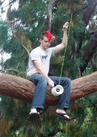
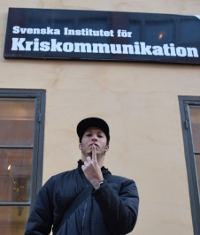

After our wonderful experience with Spring Break Of Code, we were excited to try this again. Even with high expectations based on our experience in the Spring, the response was still better than what we could have hoped for. The hundreds of high-quality proposals we received were really inspiring, and we hope that one day we can get a space large enough for all of the amazing people who are passionate about the development of privacy-enhancing technology.
We think the final lineup of those attending in January is going to be great:
Rhodey (@notrhodey) space, privacy, robits and the cheaper things in life. I plan to spend WBoC working on Secure Sync, a contact and calendar synchronization service for Android featuring end-to-end encryption. I also hope to prepare “Zones” for release on Google Play by closing what is left of the GitHub issues and polishing other bits.
Christine Corbett (@corbett) Christine Corbett Moran is a PhD candidate in Computational Astrophysics alongside actively contributing to mobile products for social good. In her spare time, she enjoys skating for the Zurich City Roller Girlz roller derby team, adventure sports, and world travel. At WBoC she’ll be continuing development of TextSecure iOS and her surfing technique.
Meskio (meskio) I’m a computer geek interested in the possibilities that new technologies bring to empower people. I love to learn programming languages and develop free software. I’ve being working for the past two years at CERN (Geneva, Switzerland) as a C++ developer in the control system of the accelerators. I’m a maniac of mountains and traveling, going to remote places searching for new routes to climb. At the WBoC I’ll be working on adding OpenStreetMap support to Zones and squashing bugs on TextSecure.
Ellie Frost (@stillinbeta) I’m a software engineer, presently working towards a degree in computer science at the University of Toronto. I like open source, distributed systems, and vegan food. I dislike single points of failure, untested code, and patriarchy.
I will be working on a system for distributing APKs, collecting statistics, and handling crash reports outside of the Google Play framework. This will make it easier to run Open Whisper Systems’ software on Android devices without Google’s proprietary software.
Matt Corallo Matt is a senior Computer Science student at UNC. He has been a developer on the Bitcoin Core client (the most popular Bitcoin client) for over two years and the bitcoinj library (the most popular library which powers the top mobile client and several desktop clients) for over a year. His research interests include software mechanisms for protecting systems against physical attacks and practical secure systems. During the WBoC, Matt will be working to implement browser extensions for TextSecure and RedPhone to allow users access to their text messages and phone calls outside of their smartphone.
Meghana Khandekar (@mkhandekar) Meghana is an MFA Interaction Design student at School of Visual Arts in New York. She explores the way people interact with others, technology & products, and ultimately improves those experiences. She has worked with startups, Berkman Center, World Bank, and UNICEF to design software & systems solutions to improve access to & delivery of services and information. Through this work experience she has come to design for discourse around human rights, freedom of expression and digital security.
Meghana’s primary goal for the week will be understanding Open Whisper Systems’ mission; audience and brand attributes; the market(s) to which it belongs; its competitors and collaborators; and the desired perception and image within those groups. All this will inform Open Whisper Systems’ new branding, website design, and communication strategy. If time permits, that work could influence aspects of TextSecure and RedPhone design and user experience as well.
 Jake McGinty I like the distorted, the unexpected, and solid colors. To pass the time I am enjoying my sensory inputs, providing sensory output, and generally trying to find good problems around free information. I am in awe at the doors technology has opened as well as its amazing potential for unintended consequences. I’m always searching for the secrets of the human factor and the subtle effects technology has on our behavior. I’ll be working on improving the look and feel of TextSecure, stomping out bugs, as well as filling some outstanding feature requests to pump up TextSecure’s client-side security. Beyond that, hopping around, learning, contributing, falling into water a lot, and generally mushing minds together.
Lilia Kai (@liliakai) As a web developer for the EFF, and given my laser-enhanced 20/15 visual acuity, I’m pretty much a superhero. Other hats I’ve worn include Arduino hacker, duck farmer, and pro yoyoer. This winter break I’ll be using my superpowers to ensure that no matter what device, browser, search engine, or screen size you prefer, the Open Whisper Systems website is always looking good!
 Tyler Reinhard (@abolishme) Tyler is a workflow publisher, designer, front-end web developer, and social theorist living in Brooklyn, NY. He’s been involved with Whisper Systems since the original beta, and is currently working on the iOS interface for a new implementation of Open Whisper Systems secure communication software. Tyler is also the co-founder of Mask Magazine, a style magazine for antagonist youth.
Moxie Marlinspike (@moxie) Interested in the tension towards the unmediated, combined with a strange passion for secure protocols. Ultimately, we also needed someone there to wash the dishes.